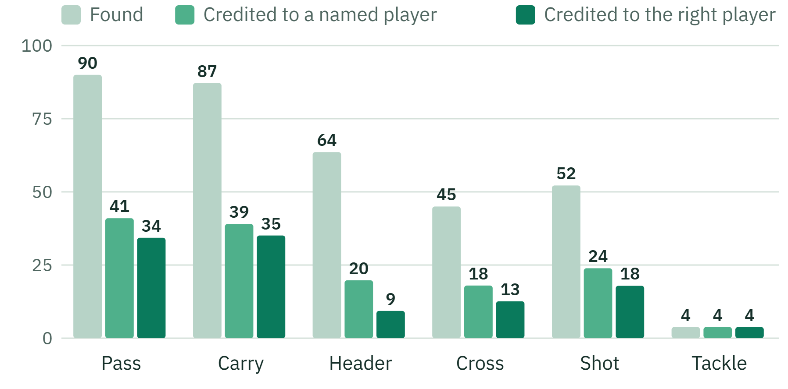

Backup · end to end
From video to a credited player, per event type
Models: the whole chain (detector, tracker, identity model, T-DEED spotter). 3 unseen FOOTPASS games, 3,059 passes, 2,470 carries

Following the pass
90%
of real passes are found
89%
of found passes go to the right team
41%
are credited to a named player
34%
are credited to the right named player
When a pass is credited, it is the right player 84% of the time.
FOOTPASS held-out games 18, 24 and 47 (6 halves), 2.03 million true player-samples · PitchProfile · AAI3001
31